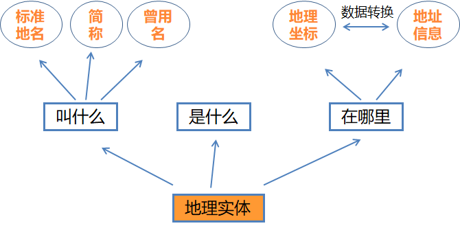
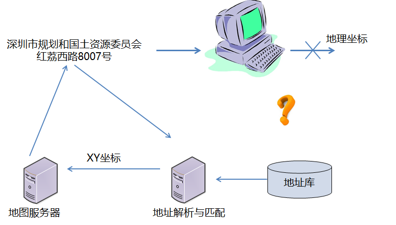
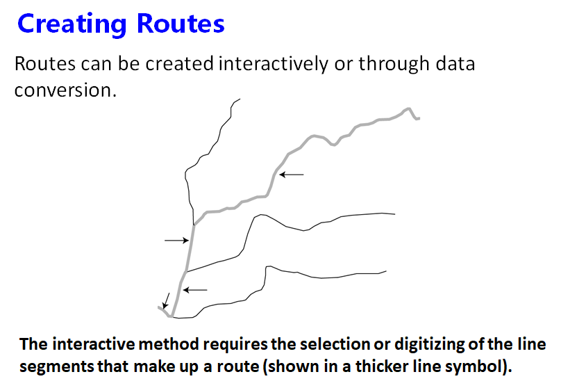
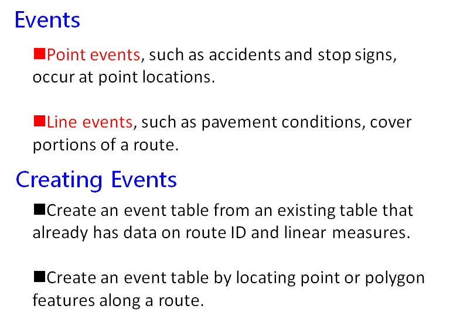

# 地理编码和动态分段
# 地理编码
地理编码是地理建模的基础。而地理建模，是为了将现实世界中的对象进行抽象，以计算机的方式表达的过程。只有对地理对象进行建模，才能通过计算机模拟和分析各种地理过程，服务于人类的科学认知并解决实际问题。
# 基本概念
地址与地名
**地址：**是一串字符，内含行政区划、门牌、建筑物名称，或者再加楼层数目、房间编号等。一个有效的地址应该是独一无二的。
**地名：**人们赋予某一特定空间位置上自然或人文地理实体的专有名称。
地理编码
地理编码也称地址匹配，是指将地址映射成地理坐标的过程，提供了一种把描述成文本地址的地理位置信息转换成地理坐标的方式。
地理编码服务
正向地理编码服务实现了将地址或地名描述转换为地球表面上相应位置的功能。
反向地理编码服务实现了将地球表面的地址坐标转换为标准地址的过程，反向地理编码提供了坐标定位引擎，帮助用户通过地面某个地物的坐标值来反向查询得到该地物所在的行政区划、所处街道、以及最匹配的标准地址信息。
# 应用
- Location-based services
- Business application
- Wireless emergenct services
- Crime mapping and analysis
- Pulbic health
# 动态分段
# 基本概念
Dynamic segmentation refers to the process of computing the location of events along a route.
- A route is a linear feature with a linear measurement system stored with its geometry.
- Events are linearly referenced data that occur along routes.
Dynamic segmentation is developed on linear reference. If use two data structures: route dataset and event table dataset. In real life, many geographic positions are recorded as the events of features along the line.
For example, we tell you that an accident happened in 500m west to the No. 32 corner. Sometimes, over-accurate figures are useless for us in our daily life. However, the relative positions points or lines can help us get the information we want at ease. Linear reference can associate each part of the linear feature to different attribute values under the conditions of not splitting the linear feature into sections.
# 实现方式
Creating Routes
Types of Routes：
- Simple route
- Combined route
- Split route
- Looping route
Create Events

← 空间插值 最小阻抗分析和网络分析 →